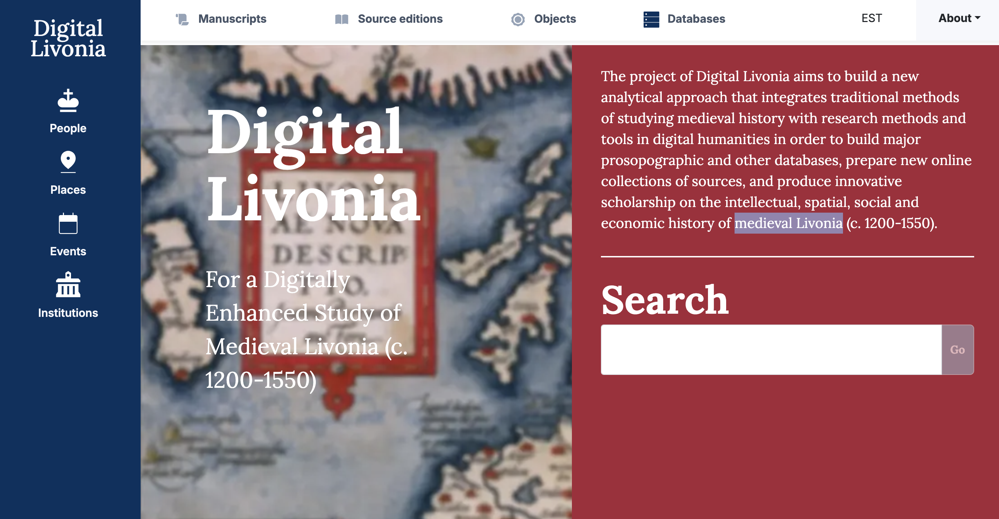

I like what I have done
Below you will find some of my favurite.
Digital Livonia
Year completed: work in progessDigital Livonia (DL) is a research project led by Tallinn University, aimed at consolidating all digital resources related to medieval Livonia. My role in this project is to develop a web system that integrates these resources into one accessible platform.
I have been responsible for the architecture of the system, which includes using technologies like Next.js, Directus, and Kubernetes. I collaborate with two other developers who focus on creating functional components, while my primary task is to design the UI and integrate all the various elements.
This project has pushed me to learn new technologies, such as Kubernetes, and how to set up infrastructure from scratch. It has also emphasized the importance of documentation and effective communication.
The project and website are still in development.
Have a look: dl.tlu.ee
Estonian national costumes
Year completed: 2020The Estonian National Costume website was my first experience working with React and Next.js. Although the initial Next.js setup was created by another developer, my primary responsibility was designing and building the user interfaces. Now, a year after its launch, I can see various aspects that could be improved or done differently.
The site utilizes an IIP Image Server to deliver high-quality, zoomable images and is one of the few in Estonia to serve images according to the IIIF standard. This setup allows all images—one of the site’s main features—along with their metadata, to be viewed and queried through third-party systems like Project Mirador.
Have a look: rahvaroivad.ee

Ackermann research project
Year completed: 2017The Ackermann project focused on documenting and conserving wooden sculptures by Christian Ackermann, located in various churches across Estonia. In addition to completing the documentation of these sculptures, we also developed a web and mobile website, as well as an interactive kiosk system for use in the churches.
In this project, I served as both the technical project manager and the frontend developer.
Have a look: ackermann.ee and exhibition version (requires 4K screen)

New Forest Knowledge
Year completed: 2016In this project, we developed a user-friendly website that integrates a high level of complexity. The site consolidates over 20 different data sources from external organizations into one cohesive and manageable system, giving users access to a vast amount of information about the New Forest.
Key features include a web mapping system, a data aggregator, advanced search functionality, and several custom interactive tools that enhance the usability of the site, setting it apart from other similar platforms.
Although the technology behind this project is now somewhat outdated, the system is still actively maintained and remains in use, demonstrating its enduring value and functionality.
My role in this project was both technical project manager and frontend developer.
Have a look: nfknowledge.org